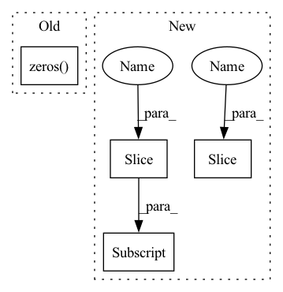

Pattern ID :12576

Before Change
patches = extract_patches_from_pyramid(
image, lafs, PS=self.conf["patch_size"])[0]
if len(keypoints) == 0:
descriptors = torch.zeros((0, 128))
else:
descriptors = self.describe(patches).reshape(len(patches), 128)
else:
raise ValueError(f"Unknown descriptor: {self.conf["descriptor"]}")
After Change
if len(patches) > 0:
for start_idx in range(0, len(patches), self.max_batch_size):
end_idx = min(len(patches), start_idx+self.max_batch_size)
descriptors[start_idx:end_idx] = self.describe(
patches[start_idx:end_idx])
else:
raise ValueError(f"Unknown descriptor: {self.conf["descriptor"]}")
In pattern: SUPERPATTERN
Frequency: 4
Non-data size: 4
Instances
Fragment ID: 42762733
Project Name: cvg/hierarchical-localization
Commit Name: 4577622ca0a1c6740b095088e52477db9684c209
Time: 2022-09-20
Author: mihai.dusmanu@gmail.com
File Name: hloc/extractors/dog.py
M Class Name: DoG
N Class Name: DoG
M Method Name: _forward(2)
N Method Name: _forward(2)
M Parent Class: BaseModel
N Parent Class: BaseModel
M File Name: hloc/extractors/dog.py
N File Name: hloc/extractors/dog.py
M Start Line: 87
M End Line: 92
N Start Line: 88
N End Line: 96
'>
Before Change
patches = extract_patches_from_pyramid(
image, lafs, PS=self.conf["patch_size"])[0]
if len(keypoints) == 0:
descriptors = torch.zeros((0, 128))
else:
descriptors = self.describe(patches).reshape(len(patches), 128)
else:
raise ValueError(f"Unknown descriptor: {self.conf["descriptor"]}")
After Change
descriptors = patches.new_zeros((len(patches), 128))
if len(patches) > 0:
for start_idx in range(0, len(patches), self.max_batch_size):
end_idx = min(len(patches), start_idx+self.max_batch_size)
descriptors[start_idx:end_idx] = self.describe(
patches[start_idx:end_idx])
else:
raise ValueError(f"Unknown descriptor: {self.conf["descriptor"]}")
'>
Fragment ID: 42762734
Project Name: cvg/hierarchical-localization
Commit Name: 4577622ca0a1c6740b095088e52477db9684c209
Time: 2022-09-20
Author: mihai.dusmanu@gmail.com
File Name: hloc/extractors/dog.py
M Class Name: DoG
N Class Name: DoG
M Method Name: _forward(2)
N Method Name: _forward(2)
M Parent Class: BaseModel
N Parent Class: BaseModel
M File Name: hloc/extractors/dog.py
N File Name: hloc/extractors/dog.py
M Start Line: 87
M End Line: 92
N Start Line: 88
N End Line: 96
'>
Before Change
self.linear_param1 = torch.nn.Parameter(torch.zeros((depth, 3 * hidden_features, hidden_features)))
self.out_linear = torch.nn.Parameter(torch.randn((1, 2 * hidden_features ** 2, out_features)))
self.register_buffer("hidden_state", torch.zeros(1, 2 * hidden_features, hidden_features))
self.register_buffer("embedding", torch.ones((input_cases, hidden_features, hidden_features)))
for idx in range(depth):
After Change
self.hidden_features = hidden_features
features_sqrt = int(hidden_features ** 0.5)
self.linear_param0 = torch.nn.Parameter(torch.zeros((depth, 3 * hidden_features, hidden_features)))
self.linear_param1 = torch.nn.Parameter(torch.zeros((depth, 3 * hidden_features, hidden_features)))
self.out_linear = torch.nn.Parameter(torch.randn((1, 2 * hidden_features, out_features)))
self.embedding = torch.nn.Parameter(torch.randn((input_cases, hidden_features)).mul(0.004))
for idx in range(depth):
for sub_idx in range(3):
torch.nn.init.orthogonal_(
self.linear_param0[idx][sub_idx * hidden_features:(1 + sub_idx) * hidden_features])
torch.nn.init.orthogonal_(
self.linear_param1[idx][sub_idx * hidden_features:(1 + sub_idx) * hidden_features])
hidden_state = torch.randn(1, 2 * features_sqrt, features_sqrt)
hidden_state[0, :features_sqrt] = hidden_state[0, :features_sqrt].qr().Q
hidden_state[0, features_sqrt:] = hidden_state[0, features_sqrt:].qr().Q
self.register_buffer("hidden_state", hidden_state.clone())
self.depth = depth
'>
Fragment ID: 42762735
Project Name: homebrewnlp/homebrewnlp
Commit Name: e6bfdfa67ff9b5477696711d7d570685448ee141
Time: 2021-06-20
Author: 39779310+ClashLuke@users.noreply.github.com
File Name: module.py
M Class Name: FixedRevRNN
N Class Name: FixedRevRNN
M Method Name: __init__(8)
N Method Name: __init__(8)
M Parent Class: torch.nn.Module
N Parent Class: torch.nn.Module
M File Name: module.py
N File Name: module.py
M Start Line: 101
M End Line: 127
N Start Line: 109
N End Line: 132
'>
Before Change
new_data[key] = np.concatenate([value] * self.times)
pos_len = len(data[self.target_iid_field])
total_len = len(new_data[self.target_iid_field])
new_data[self.label_field] = np.zeros(total_len, dtype=np.int)
new_data[self.label_field][:pos_len] = 1
return new_data
def get_pos_len_list(self):
After Change
return new_data
def _neg_sample_by_point_wise_sampling(self, data, neg_iids):
pos_inter_num = len(data)
new_data = data.repeat(self.times)
new_data[self.iid_field][pos_inter_num:] = neg_iids
labels = torch.zeros(pos_inter_num * self.times)
labels[: pos_inter_num] = 1.0
new_data.update(Interaction({self.label_field: labels}))
return new_data
'>
Fragment ID: 42762736
Project Name: rucaibox/recbole
Commit Name: 03922da139b2a8c758f07f98804e43f8f2003d8b
Time: 2020-11-30
Author: 297086016@qq.com
File Name: recbole/data/dataloader/sequential_dataloader.py
M Class Name: SequentialNegSampleDataLoader
N Class Name: SequentialNegSampleDataLoader
M Method Name: _neg_sample_by_point_wise_sampling(3)
N Method Name: _neg_sample_by_point_wise_sampling(3)
M Parent Class: NegSampleByMixin,SequentialDataLoader
N Parent Class: NegSampleByMixin,SequentialDataLoader
M File Name: recbole/data/dataloader/sequential_dataloader.py
N File Name: recbole/data/dataloader/sequential_dataloader.py
M Start Line: 211
M End Line: 220
N Start Line: 205
N End Line: 210
'>
Before Change
Update forward_rate_constants
self.forward_rate_constants = torch.zeros(
[self.T.shape[0], self.n_reactions]).to(self.device)
ln10 = torch.log(torch.Tensor([10.0])).to(self.device)
After Change
self.Arrhenius_Ea * 4184.0 / self.R / self.T) \
* self.C_M2
for i in self.list_reaction_type4:
reaction = self.reaction[i]
// high pressure
self.kinf = reaction["A"] * \
torch.exp(reaction["b"] * torch.log(self.T) \
- reaction["Ea"] * 4184.0 / self.R / self.T)
// low pressure
self.k0 = self.reaction[i]["A_0"] * \
torch.exp(reaction["b_0"] * torch.log(self.T) \
- reaction["Ea_0"] * 4184.0 / self.R / self.T)
Pr = self.k0 * self.C_M[:, i: i + 1] / self.kinf
lPr = torch.log10(Pr)
self.forward_rate_constants[:, i: i + 1] = \
self.forward_rate_constants[:, i: i + 1] * Pr / (1 + Pr)
if "Troe" in self.reaction[i]:
A = reaction["Troe"]["A"]
T1 = reaction["Troe"]["T1"]
T3 = reaction["Troe"]["T3"]
F_cent = (1 - A) * torch.exp(-self.T / T3) + \
A * torch.exp(-self.T / T1)
if "T2" in reaction["Troe"]:
T2 = reaction["Troe"]["T2"]
F_cent = F_cent + torch.exp(-T2 / self.T)
lF_cent = torch.log10(F_cent)
C = -0.4 - 0.67 * lF_cent
N = 0.75 - 1.27 * lF_cent
f1 = (lPr + C) / (N - 0.14 * (lPr + C))
F = torch.exp(ln10 * lF_cent / (1 + f1 * f1))
self.forward_rate_constants[:, i: i + 1] = \
self.forward_rate_constants[:, i: i + 1] * F
self.forward_rate_constants = self.forward_rate_constants * self.uq_A.abs()
'>
Fragment ID: 42762737
Project Name: deng-mit/reactorch
Commit Name: e52b04ba19b88ed0e36f61c83f09bbcd4c3704db
Time: 2020-07-01
Author: 41820879+WeilunQiu@users.noreply.github.com
File Name: reactorch/Solution.py
M Class Name: Solution
N Class Name: Solution
M Method Name: forward_rate_constants_func(1)
N Method Name: forward_rate_constants_func(1)
M Parent Class: nn.Module
N Parent Class: nn.Module
M File Name: reactorch/Solution.py
N File Name: reactorch/Solution.py
M Start Line: 273
M End Line: 324
N Start Line: 290
N End Line: 334